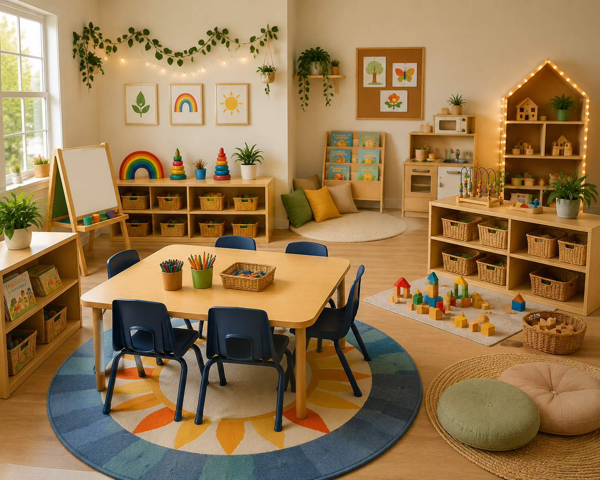

Three and four year olds develop independence while strengthening communication, creativity, cooperation, and critical thinking.
Preschool classrooms encourage children to wonder, experiment, collaborate, and communicate while building strong foundations for future learning through purposeful play.

Preschool children learn best through play, conversation, exploration, creativity, and meaningful relationships. Every activity supports multiple areas of development.
Predictable routines help children build confidence while allowing plenty of opportunities for exploration, collaboration, and independence.
Children greet teachers, choose activities, explore learning centers, and build friendships through free play.
Children participate in circle time, read alouds, songs, movement, and small group investigations.
Children continue exploring curriculum studies before enjoying active outdoor experiences.
Each center encourages creativity, independence, language development, and problem solving through purposeful play.
Design buildings, bridges, roads, and cities while exploring engineering concepts.
Experiment with painting, drawing, collage, sculpture, and open ended creativity.
Develop vocabulary, listening skills, comprehension, and a love for reading.
Observe, compare, predict, investigate, and explore scientific concepts.
Develop communication, cooperation, imagination, and social emotional skills.
Explore rhythm, instruments, dance, and creative movement.
Practice drawing, writing, letter formation, and storytelling.
Measure, pour, compare, experiment, and strengthen scientific thinking.
Meaningful investigations that encourage children to ask questions, solve problems, and explore their world.
Preschool children become increasingly independent as they strengthen communication, problem solving, creativity, and self confidence through meaningful classroom experiences.
Simple strategies help children become confident learners while encouraging curiosity and independence.
Encourage children to explain their thinking rather than giving one word answers.
Allow children to predict, test ideas, observe changes, and discover solutions independently.
Interactive read alouds build vocabulary, comprehension, and a lifelong love for books.
Focus on effort, kindness, creativity, and perseverance rather than perfection.
Balanced experiences provide opportunities for children to explore, create, communicate, and discover throughout the day.
Printable resources designed to make planning easier while supporting engaging classroom experiences.
Preschool learning continues far beyond the classroom. Encourage families to explore, ask questions, read together, cook, garden, take neighborhood walks, count everyday objects, and allow children to help with simple household routines. Everyday experiences build vocabulary, confidence, independence, and a lifelong love of learning.
Explore Family Engagement →